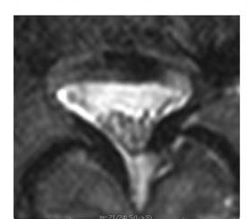
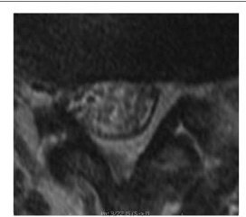
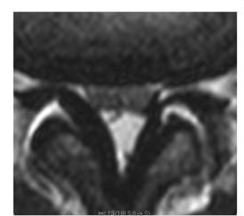
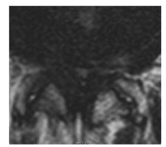
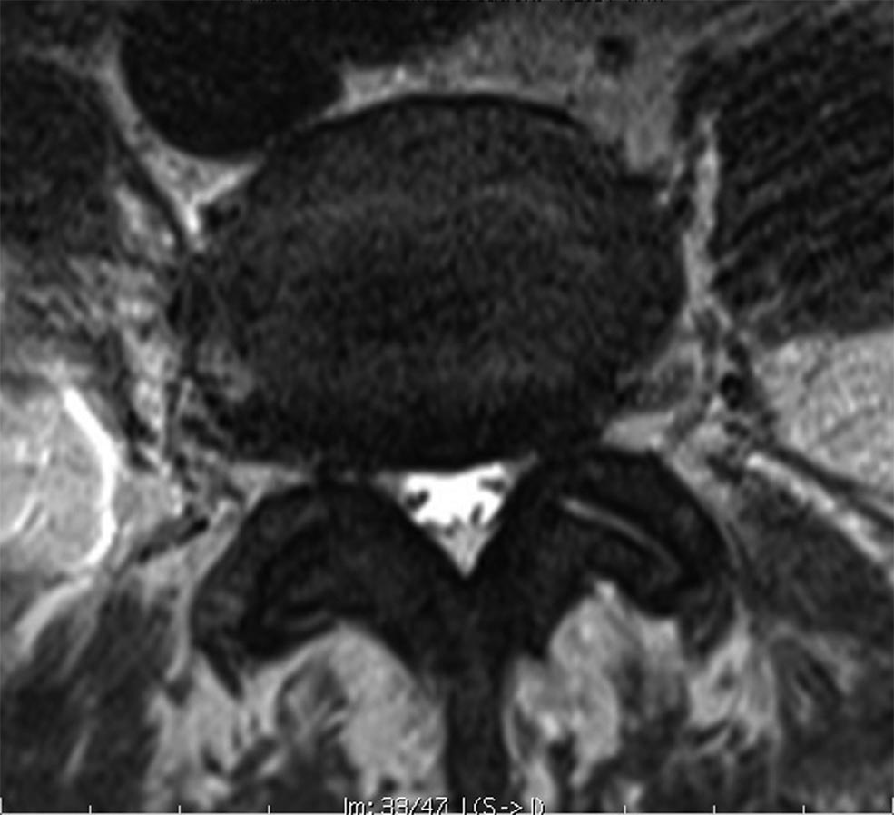
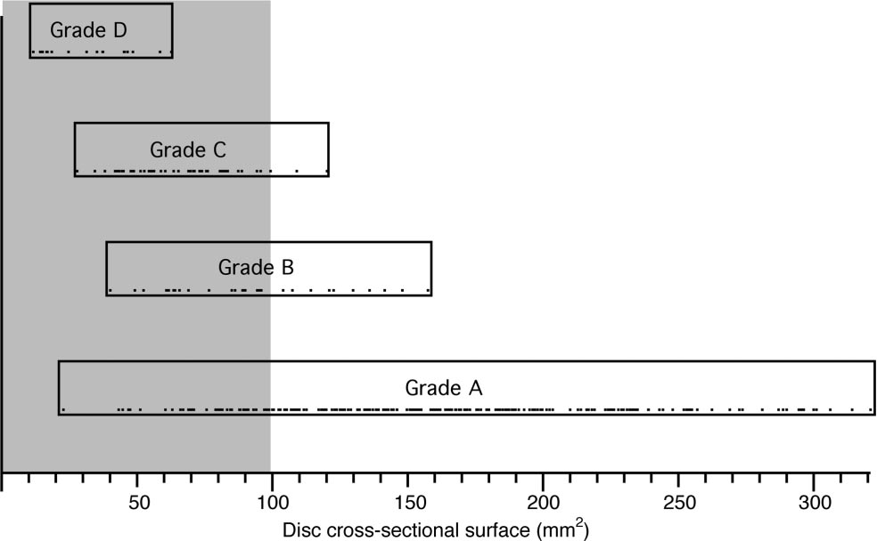
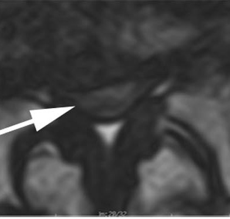
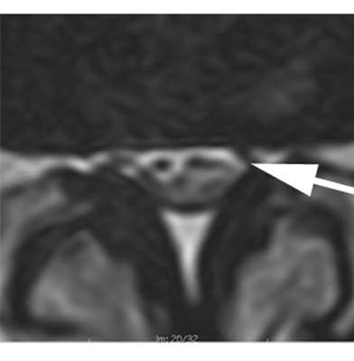
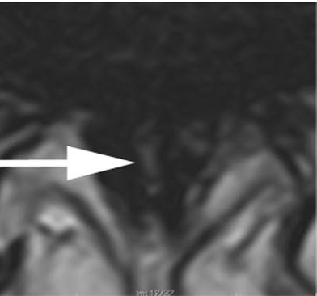
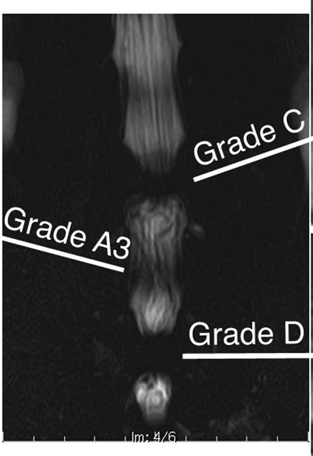

Grading the dural sac by what is inside it — and why that beats measuring it.
Companion to Part 1 and the timeline figures.
1Before you open the study
The cervical question is is the cord in danger. The lumbar question is different, and softer:
does this picture explain this patient’s legs?
Nobody dies of lumbar stenosis. That changes what your read is for. You are not triaging a cord at risk —
you are deciding whether the imaging supports the story the patient is telling, because the operation is offered
for symptoms, not for pictures.
The one exception, and it is absolute. Saddle anaesthesia, new urinary retention or overflow, or new
bilateral leg weakness is cauda equina syndrome until disproved — a same-day surgical problem.
No grade on this page overrides those three symptoms, and no grade is needed to act on them.
Two habits will save you more than any grading system. Count the levels from the sacrum every time —
transitional anatomy is common and a mislabelled level ends up in an operative note. And look at the patient’s
age before the pictures: disc degeneration, bulges and facet arthropathy are near-universal past sixty, and
finding them tells you almost nothing on its own.
2The seven-step read
Run it in this order every time. Step 1 first, because if the conus is low nothing else on the study
means what you think it means.
3Schizas — the whole system on one page
Seven grades, built from a single observation: what is the ratio of rootlets to cerebrospinal
fluid inside the dural sac? Nothing is measured. Nothing is calculated.
The rule that makes it learnable: look inside the sac, not at the bone around it. If you can see
cerebrospinal fluid, it is A or B. If you cannot see any, it is C or D. That single split is the clinically
important one, and it takes about two seconds.
Read it top to bottom as one continuous process: the rootlets start settled dorsally in a
generous pool of fluid, gradually fill the sac, and finally the fluid disappears altogether.
Schizas et al., Spine 2010;35:1919–24, Figure 1 permission pending
4The four grades that change anything
A1 to A4 differ only in where the rootlets have settled under gravity — a distinction worth
knowing exists, and not worth drilling. Learn the four letters.

Schizas et al., Spine 2010, Figure 1 permission pending
Grade A — fluid clearly visible
Axial T2 at the disc level
Cerebrospinal fluid is obvious inside the sac and individual rootlets can be picked out. The four subtypes (A1–A4) describe only where the rootlets have settled — dorsally, in a horseshoe, or centrally.
What it means: No or minor stenosis. If this is the narrowest level, the imaging does not support decompression, whatever the measured area says.

Schizas et al., Spine 2010, Figure 1 permission pending
Grade B — rootlets fill the sac, but still countable
Axial T2 at the disc level
The rootlets occupy the whole sac and are no longer separated by a clear pool of fluid, but you can still make out individual roots. Some fluid remains, giving the sac a grainy texture rather than a smooth one.
What it means: Moderate stenosis. The grainy look is the giveaway — graininess means fluid is still in there.

Schizas et al., Spine 2010, Figure 1 permission pending
Grade C — no fluid at all, fat still present
Axial T2 at the disc level
No rootlets can be identified. The sac is a homogeneous grey disc with no fluid signal anywhere inside. Posterior epidural fat is still visible behind it.
What it means: Severe stenosis. In the Schizas cohort, 20 of 37 surgical patients had this as their narrowest grade.

Schizas et al., Spine 2010, Figure 1 permission pending
Grade D — no fluid, no posterior fat either
Axial T2 at the disc level
As grade C — a homogeneous grey sac — and in addition the posterior epidural fat has been squeezed out. Nothing is left between the sac and the posterior arch.
What it means: Extreme stenosis. Not one patient in the low-back-pain-only group had a grade D level.
5Why the picture beats the number
Dural sac cross-sectional area is the conventional measurement: under 100 mm² is called
relative stenosis, under 75 mm² absolute. Schizas tested that against morphology, and the number lost.

Schizas et al., Spine 2010, Figure 3 permission pending
The case that makes the argument
Axial T2 at L4–L5 — the paper’s own worked example
Measured dural sac area: 66 mm². That is below 75, so by the conventional numeric criterion
this is absolute stenosis — the most severe label the measurement offers.
Now look at it. Cerebrospinal fluid is plainly visible. The rootlets are not impinged. It is a
grade A sac, and grade A is where 23 of 27 low-back-pain-only patients sat.
The sac is small, but it is not full. A narrow sac with room inside it is not the same problem as a
wide sac packed solid, and only one of those two facts is visible in a cross-sectional area.

The same data as a picture. Every grade spans a wide range of areas, and the ranges overlap
heavily — grade C cases appear above 100 mm² while grade A cases appear below 50. There is no cut-off
you could draw on this axis that would reproduce the grades.
Schizas et al., Spine 2010, Figure 2 permission pending
6Does the grade actually track the patient?
This is the question that decides whether a grading system is worth your time. Schizas applied it
to three groups: people with back pain only, people treated conservatively, and people who went to surgery.
What to take from this. Grades C and D account for 89% of the surgical group and
11% of the back-pain-only group. That is a real separation, achieved with no measurement and no
calculation — just looking inside the sac. It is also why the A1–A4 subtypes are not worth drilling:
they all sit in the same clinical bucket.
7Drill
Four axial T2s. Grade each one before you open the answer. Ask only: can I see cerebrospinal
fluid inside the sac? — then, if not, is there still fat behind it?
Case 1
Show answer
Grade A
Fluid is clearly visible and rootlets are not impinged. Measured area 66 mm² — which is why this case is in the paper. The number says absolute stenosis; the morphology says A.
Case 2

Show answer
Grade C
A homogeneous grey sac with no fluid signal inside it, but posterior epidural fat is still present behind the sac. No fluid + fat still there = C.
Case 3

Show answer
Grade A3
Rootlets lie dorsally and occupy more than half the sac, but fluid is still clearly visible ventrally. Within grade A — the subtype is A3, which changes nothing clinically.
Case 4

Show answer
Grade D
No fluid inside the sac and no posterior epidural fat either. Nothing between the sac and the posterior arch. That second absence is the whole difference between C and D.

The same patient, seen whole. This is the coronal myelographic sequence from cases 2–4.
The bright fluid column is interrupted at exactly the levels graded C and D and flows past the level
graded A3. The grading is not an abstraction — it is the block, seen on a single axial slice.
Schizas et al., Spine 2010, Figure 4 permission pending
8Why this system, and not one of the others
Schizas is not the newest — Lee is a year later and performs about as well. It is,
by a wide margin, the most cited, and the reasons it won out are worth two minutes because they are
reasons about evidence, not fashion.
System
Year
What it looks at
Grades
Where it stands now
Canal diameter Verbiest lineage
1954–
Front-to-back diameter of the bony canal
2 bands
Superseded. Steurer’s review found cut-offs of <10, <12 and <15 mm all in
active use, none of them validated.
Dural sac cross-sectional area
1980s–
Measured area of the sac on one axial slice
continuous
Still quoted in reports. Disagrees with morphology in both directions (§5), and repeat
measurements of the same slice vary by 6–9 mm².
Schizas
2010
Rootlet-to-fluid ratio inside the sac, plus dorsal epidural fat
7 A1–A4, B, C, D
488 citations. κ 0.44 between observers in the original paper; ICC 0.83–0.98 in later
work with trained readers.
Lee
2011
Obliteration of the anterior fluid space, and whether individual roots can still be separated
4 0–3
147 citations. ICC 0.84–0.98 — statistically indistinguishable from Schizas when the two
were run head to head.
Nerve root sedimentation sign Barz
2010
Do the roots settle dorsally under gravity, or stay suspended?
binary
An adjunct rather than a grade. Head to head against Schizas: AUC 0.853 vs 0.943, losing mostly
on specificity (76% vs 88%).
Why it won
1 · It arrived exactly as measurement was collapsing. One year after Schizas, Steurer published a
systematic review of quantitative criteria for lumbar stenosis. It found ten different parameters in use,
with incompatible cut-offs, and concluded there were no validated criteria at all — only 4 of 63
primary studies even reported the radiological thresholds they had used to enrol patients. Schizas offered
something that needed no threshold.
2 · It was validated against what happened to the patient. Most grading papers report only whether
readers agree with each other. Schizas tested the grade against three real groups — back pain only,
treated conservatively, and operated (§6). Agreement between readers tells you a system is consistent;
only that three-group design tells you it is about anything.
3 · Learnability was tested deliberately, not assumed. The original paper had it applied by junior
orthopaedic trainees, and by a surgeon and radiologist in a different country who received only the written
description with no briefing. That is an unusual thing to put in your own paper, and it is the reason this
is a reasonable skill to teach to an audience of APPs in twenty minutes.
4 · It was published where surgeons read.Spine, not a radiology journal. The people who
decide whether to operate encountered it directly.
The honest caveat, because you may hear otherwise. A 2023 review describes the Lee system as
“now widely accepted in clinical practice, included in web-based radiology resources, and cited in many
studies.” That review is co-authored by Joon Woo Lee, a developer of the Lee system — so treat
it as a claim by an interested party rather than a neutral finding. On citation count Schizas leads
488 to 147. Both systems are defensible and they ask nearly the same question.
Practical answer: if your radiologists report in Lee grades, learn Lee. Grade 0–1 maps to Schizas
A–B, and grade 2–3 to C–D. The underlying skill — can I see cerebrospinal fluid inside
the sac? — is identical, and it is the skill that transfers.
9Honest limits
Interobserver agreement is only fair. Across all readers in the original study, κ was
0.44 between observers and 0.65 within the same observer. Among readers at the unit that devised
it, those rose to 0.67 and 0.77 — and the authors saw a learning effect between readings. Two
honest conclusions: the system is teachable and improves with practice, and a single grade from a single reader
is not a hard number. Where a grade drives a decision, say who graded it.
Call it and act on it
Defer it, always
The Schizas grade at each narrowed level
Any mass, marrow replacement or enhancing lesion
Which level is narrowest
Anything that is not degenerative in origin
Whether fluid is present inside the sac
Infection, and any destructive endplate change
Conus position, and whether it is normal
The final operative level — that is the surgeon’s call
That the imaging does or does not match the legs
Whether an area measurement means anything here
The sentence to write."Grade C at L4–5, grade A3 at L3–4; narrowest level L4–5.
Symptoms are bilateral and positional and fit that level." That is a defensible, useful read from an APP.
What is not defensible is "severe stenosis" with no level and no grade attached.
Source. Schizas C, Theumann N, Burn A, Tansey R, Wardlaw D, Smith FW, Kulik G.
Qualitative grading of severity of lumbar spinal stenosis based on the morphology of the dural sac on magnetic
resonance images. Spine 2010;35(21):1919–1924. All grading definitions, reliability figures and group
distributions on this page are taken from that paper and were checked against its full text.
Comparison sources (§8).
Lee GY, Lee JW, Choi HS, Oh KJ, Kang HS. A new grading system of lumbar central canal stenosis on MRI: an easy
and reliable measurement. Skeletal Radiol 2011;40(8):1033–9.
· Ko Y-j, Lee E, Lee JW, et al. Clinical validity of two different grading systems for lumbar central canal
stenosis: Schizas and Lee classification systems. PLoS ONE 2020;15(5):e0233633.
· Steurer J, Roner S, Gnannt R, Hodler J. Quantitative radiologic criteria for the diagnosis of lumbar
spinal stenosis: a systematic literature review. BMC Musculoskelet Disord 2011;12:175.
· Seo J, Lee JW. Magnetic resonance imaging grading systems for central canal and neural foraminal
stenoses. Korean J Radiol 2023;24(3):224–234.
· Qian G, et al. Value of nerve root sedimentation sign in diagnosis and surgical indication of lumbar
spinal stenosis. BMC Musculoskelet Disord 2023;24:336.
· Citation counts from Europe PMC, retrieved for this handout.
Figures reproduced from the same paper pending permission. Every image on this page is clickable.